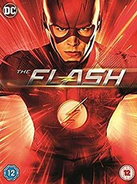

En esta serie basada en "Flecha Verde" de DC Comics, un rico playboy se convierte en un vengativo superhéroe que lucha por su ciudad armado con solo un arco y flechas.

The Flash
Un policía forense llamado Barry Allen (Grang Gustin) consigue el don de una velocidad sobrehumana tras ser golpeado por un rayo al tiempo que explota un acelerador de partículas.
Tras unos meses en coma, Barry descubre esa habilidad que utiliza para luchar contra el crimen con el nombre de Flash, un héroe enmascarado vestido de rojo que colabora con el equipo de Laboratorios Star.
Game of Thrones
"Game of Thrones" es una serie de televisión basada en la serie de novelas "Canción de hielo y fuego" escritas por George R.R. Martin. La serie se desarrolla en un mundo ficticio medieval y presenta una trama compleja llena de intriga política, traición, guerra y elementos fantásticos. Aquí tienes una sinopsis general de la trama: La serie se desarrolla en el continente de Westeros, un lugar dividido en varios reinos gobernados por diferentes casas nobles. La trama principal se centra en la lucha por el Trono de Hierro, el trono central de Westeros, que está en disputa entre varias casas nobles.
Peaky Blinders
Birmingham, 1939. Thomas Shelby es el violento líder de una conocida banda; un jefe del crimen organizado dispuesto a llegar a lo más alto sin importar el precio.
The Boys
The Boys es una serie de televisión web estadounidense de superhéroes desarrollada por Eric Kripke para Prime Video. Basada en el cómic del mismo nombre de Garth Ennis y Darick Robertson, sigue al equipo homónimo de justicieros en su lucha contra diversos individuos con superpoderes que abusan de sus habilidades.
The 100
La serie sigue a un grupo de sobrevivientes en el posapocalípsis, principalmente a un grupo de adolescentes criminales, incluidos Clarke Griffin , Finn Collins , Bellamy Blake, Octavia Blake, Jasper Jordan, Monty Green, Raven Reyes (Lindsey Morgan), John Murphy (Richard Harmon) y Wells Jaha (Eli Goree). Se encuentran entre las primeras personas de un hábitat espacial, el Arca, en regresar a la Tierra después de un devastador apocalipsis nuclear. Otros personajes principales incluyen a la Dra. Abby Griffin, la madre de Clarke; Marcus Kane, un miembro del consejo en el Arca; y Thelonious Jaha, canciller del Arca y padre de Wells.
Avatar: la leyenda de Aang
La serie se centra en el viaje de Aang, de 12 años, el Avatar actual y último superviviente de su nación, los Nómadas del Aire, junto con sus amigos Sokka, Katara y más tarde Toph, mientras se esfuerzan por poner fin a la guerra de la Nación del Fuego contra las otras naciones del mundo. También sigue la historia de Zuko, el príncipe exiliado de la Nación del Fuego, que busca restaurar su honor perdido capturando a Aang, acompañado por su sabio tío Iroh, y más tarde, la de su ambiciosa hermana Azula.
Final Space
Final Space fue una serie animada para adultos estadounidense de ciencia ficción, emitida por la cadena de televisión TBS y Adult Swim. Fue creada por Olan Rogers y desarrollada junto a David Sacks, como showrunner. La serie relata las aventuras de un prisionero intergalactico, Gary Goodspeed, y su amigo alienígena, Mooncake, cuando intentan resolver el misterio del «Final Space»
Moral Orel
Moral Orel es una serie estadounidense animada para adultos en stop-motion de Adult Swim, la cual originalmente se emitida desde el 13 de diciembre de 2005, antes de que fuera oficialmente emitido desde el 23 de enero de 2006 hasta el 18 de enero de 2009. La serie es una sátira de los arquetipos de la vida suburbana del centro de los Estados Unidos, la cultura WASP moderna, el alcoholismo y el fundamentalismo religioso. Inicialmente siendo una serie de humor negro, que satirizaba lo ya mencionado, la serie toma un giro más oscuro a partir de los últimos dos episodios de la segunda temporada y el resto de la tercera temporada, que toca las angustiosas consecuencias emocionales de la disfunción provocada por los vecinos de Moralton.